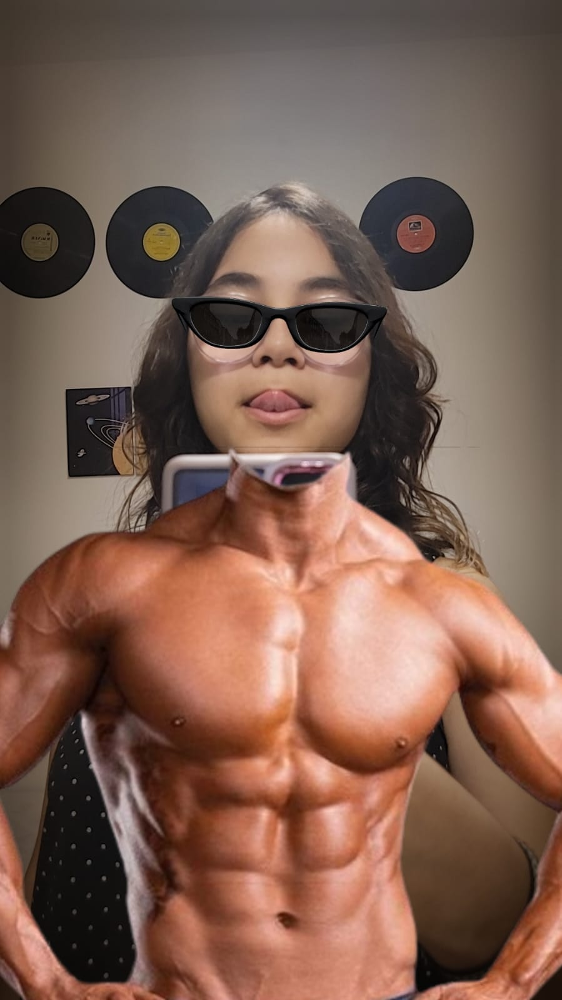
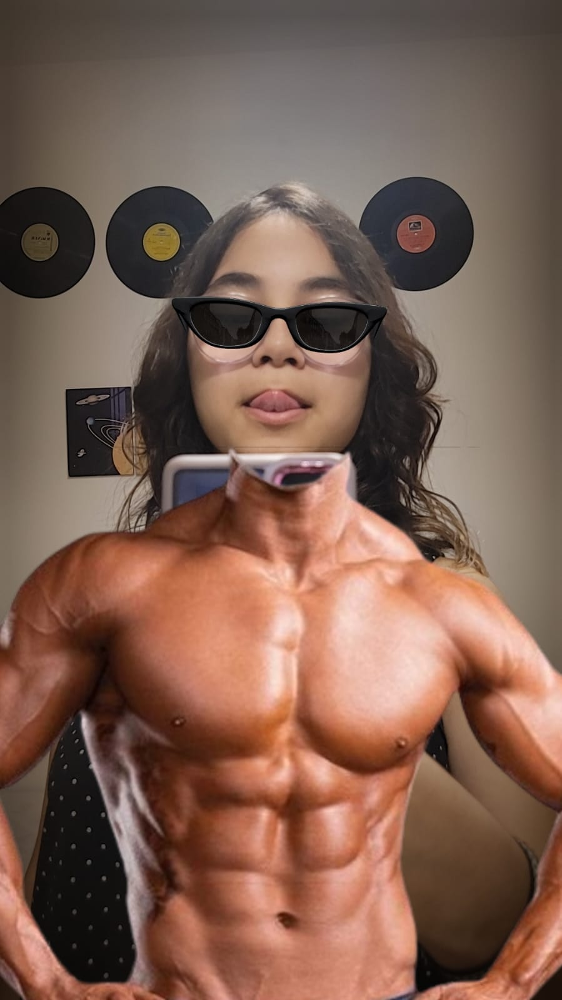

The Sun don't shine when I'm alone;
I lose my mind and I lose control;
I see your eyes look through my soul;
Don't be surprised, this is all I know;
I felt the highs and they felt like you;
See, a love like mine is too good to be true;
And you too divine to just be mine;
You remind me of the color blue;
 
